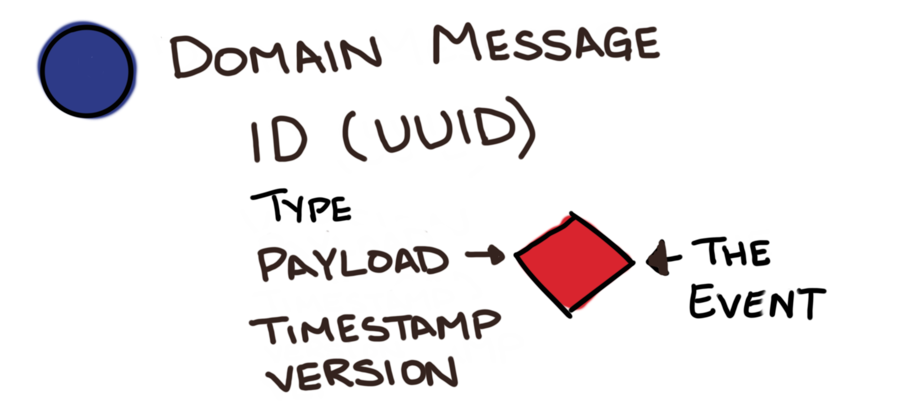

Learning Objectives:
- Basics of Event Sourcing
- Simple library example
- 3 projects and the problems Event Sourcing solved
- University Scholarships
- Adding new onto a legacy project
- Events to share across bounded contexts
- University Student Course Registration
- Events to simplify complex workflow
- InQuest Threat History
- Events to pass information
- Events to preserve history
Before we begin
Switch from CRUD to Event-Sourcing is tough
Event-Sourcing isn't for your whole application

Event Sourcing
The fundamental idea of Event Sourcing is that of ensuring every change to the state of an application is captured in an event object, and that these event objects are themselves stored in the sequence they were applied for the same lifetime as the application state itself.
Martin Fowler
Events and Listeners
An Event
What happened?
BookWasCheckedOut
What do I need to remember about it?
(book, patron, date)

Event Attributes
- Save only what you need to preserve
- The rest can be looked up
(book id, patron id, date)
Event Class
<?php
namespace Library\Events;
use Library\Support\Event;
class BookWasCheckedOut
{
/**
* @var DateTime
*/
public $checkoutDate;
/**
* @var int
*/
public $patronId;
/**
* @var int
*/
public $bookId;
public function __construct(DateTime $checkoutDate, PatronId $patronId, BookId $bookId)
{
$this->checkoutDate = $checkoutDate;
$this->patronId = $patronId;
$this->bookId = $bookId;
}
/**
* @return array
*/
public function serialize()
{
return [
'checkout_date' => $this->$checkoutDate->toString(),
'patron_id' => $this->patronId->toNative(),
'book_id' => $this->bookId->toNative(),
];
}
/**
* @param array $data
*
* @return static
*/
public static function deserialize($data)
{
return new BookWasCheckedOut(
DateTime::createFromFormat('j-M-Y', $data['checkout_date']),
PatronId::fromNative($data['patron_id']),
BookId::fromNative($data['book_id'])
);
}
}
Rules for Events
- Usually named as past-tense verbs
- RARELY changed
- Never deleted
- Has attributes that are values
- not model, object, collection, or aggregate root

Don't store objects
If We Stored Objects in an Event...


Events rarely change
- The part of the code that will change is most likely the result that follows that event.
- The structure of the resulting data is more likely to change than the thing that happened


Reasons to use Events
- State transitions are important
- We need an audit log, proof of the state we are currently in
- The history of what happened is more important than the current state
- Events are replayable if behavior in your application changes

Event Store
- Domain-specific database
- Based on a Publish-Subscribe message pattern
Projector
<?php
namespace Library\ReadModel;
use Library\Events\BookWasCheckedIn;
use Library\Events\BookWasCheckedOut;
use Library\Events\BookAddedToBookshelf;
use App\Support\ReadModel\Replayable;
use App\Support\ReadModel\SimpleProjector;
use Illuminate\Database\Schema\Blueprint;
use Illuminate\Database\Connection;
class BookshelfProjector extends SimpleProjector implements Replayable
{
/**
* @var Connection
*/
private $connection;
/**
* @var string table we're playing events into
*/
private $table = 'proj_bookshelf';
public function __construct(Connection $connection)
{
$this->connection = $connection;
}
public function beforeReplay()
{
$builder = $this->connection->getSchemaBuilder();
$builder->dropIfExists('proj_bookshelf');
$builder->create('proj_bookshelf_tmp', function (Blueprint $schema) {
$schema->string('book_id');
$schema->string('book_title');
$schema->string('book_author');
$schema->string('status');
$schema->string('checkout_date');
$schema->string('patron_id');
$schema->primary('book_id');
});
$this->table = 'proj_bookshelf_tmp';
}
public function afterReplay()
{
$builder = $this->connection->getSchemaBuilder();
$builder->dropIfExists('proj_bookshelf');
$builder->rename('proj_bookshelf_tmp', 'proj_bookshelf');
$this->table = 'proj_bookshelf';
}
/**
* @param BookWasCheckedOut $event
*/
public function applyBookWasCheckedOut(BookWasCheckedOut $event)
{
$bookshelfItem = BookshelfItem::where('id', $event->bookId);
$book->status = 'Checked Out';
$book->checkout_date = $event->checkoutDate;
$book->patron_id = $event->patronId;
$book->save();
}
/**
* @param BookAddedToBookshelf $event
*/
public function applyBookAddedToBookshelf(BookAddedToBookshelf $event)
{
$bookshelfItem = new BookshelfItem();
$bookshelfItem->setTable($this->table);
$bookshelfItem->bookId = $event->bookId;
$bookshelfItem->bookTitle = $event->bookTitle;
$bookshelfItem->bookAuthor = $event->bookAuthor;
$bookshelfItem->status = 'on shelf';
$bookshelfItem->save();
}
/**
* @param BookWasReturned $event
*/
public function applyBookWasReturned(BookWasReturned $event)
{
$bookshelfItem = BookshelfItem::where('id', $event->bookId);
$book->status = 'Available';
$book->checkout_date = '';
$book->patron_id = '';
$book->save();
}
}
A set of event handlers that work together to build and maintain a table to be accessed by the read model.
Read Model

Read Model
<?php
namespace Library\ReadModel;
use Carbon\Carbon;
use Illuminate\Database\Eloquent\Model;
/**
* @codeCoverageIgnore
*/
class Bookshelf extends Model
{
protected $table = 'proj_bookshelf';
public $incrementing = false;
public $timestamps = false;
public static function lookupLoansFor($patronId)
{
return static::where('patron_id', $patronId)->get();
}
public function lookupAvailableBooks()
{
return static::where('status', 'Available')->get();
}
public function lookupOverdueBooks()
{
return static::where('checkout_date', '<', date('Y-m-d', strtotime('-7 days')))->get();
}
}
Creating the events
- An event is created only after validation
- directly in a controller 'checkout' method
- using a Check Out Book Command and Handler
CQRS
Command and Query Response Segregation
An application architecture pattern commonly used with event sourcing
CQRS involves splitting an application into two parts internally.
CQRS
- Command is any method that mutates state
- Query is any method that returns a value
- Should only be used on specific portions of a system, not the system as a whole
Command Handler
- Validate the command on its own merits.
- Validate the command on the current state of the aggregate.
- If validation is successful, create an event(s)
- Attempt to persist the new events. If there's a concurrency conflict during this step, retry or exit.
Command Handler example
public function update(Request $request)
{
// $request has book id, patron id
try {
$command = new CheckOutBook($request->bookId, $request->patronId);
$this->bookLendingService->handleCheckOutBook($command);
} catch (InvalidUserException $e) {
return response()->json("Not authorized to check out a book.", Response::HTTP_FORBIDDEN);
} catch (BookUnavailableException $e) {
return response()->json("Book was not available to be checked out", 400);
}
<------ dynamic command handler ------>
private function handle(Command $command)
{
$method = $this->getHandleMethod($command);
if (! method_exists($this, $method)) {
return;
}
$this->$method($command);
}
private function getHandleMethod(Command $command)
{
return 'handle' . class_basename($command);
}
<-------- handle check out book command --------->
public function handleCheckoutOutBook(CheckOutBook $command)
{
$book = Book::findOrFail($command->bookId);
$patron = Patron::findOrFail($command->patronId);
if (!$book->isAvailable()) {
throw new BookUnavailableException();
}
if (!$patron->isAuthorized()) {
throw new InvalidUserException();
}
//record the event
$this->record(
new BookWasCheckedOut(date("Y-m-d H:i:s"),
$patron->getId(),
$book->getId())
);
}
Optimize
- Separate the load from reads and writes allowing you to scale each independently.
- all commands go into a WriteService
- all queries go into a ReadService
You can choose which is best
- CRUD
- Event-Sourcing
- Event-Sourcing with CQRS
- Event-Sourcing, CQRS, DDD
My Projects
- Scholarships
- Course Registration
- Threat Reports


Flexible to Changes
- Selection Committee would never take away an award
- until they did
- New academic year, new event store
Scholarships wrap-up
- Modernized the code in pieces
- View events from multiple contexts
- Flexible to changes in the application
Student Enrollment Process
- rewrote
- ES to follow the process
- status drop-down versus events
Began with Paper Forms
A lot of our systems were built to replace paper processes
They often closely map to this physical form.
© photo by Aidan Morgan
Paper Forms handling state

Status labels are like a rubber stamp
Status doesn't always communicate why or what happened
How workflows become complex
Paper Forms handling state

Piles indicate status of the form
A simple status drop-down
A "simple" status drop-down
Something happened
Status is a reflection of something that happened
There is ONE of each status + reasons/details
Events can record what happened
The Request Doesn't Get Stuck
Streamlined Process
- Focused our customers on their process and provided tools to simplify their jobs
- Managed the process flow and controlled when the student was notified about changes

Analysis
Data Filtered for User Access

Planned Improvements
- No more complex DB queries
- Separates us from older schema
- Events can be passed from the Engine to Customer-facing Site
- full audit log of what has happened in our environment
- the results of those events can be optimized for read to shorten the time to retrieve data
- separate the logic of what an event means based on context and purpose
- only display results that a user is allowed to see
- flexible to change, our interpretation of events can change, and we can rebuild projections without losing the full history
Thank you!
New Stuff to check out!
- That Podcast Episode 50: The One Where We Talk to Shawn about Event Sourcery, CQRS, Event Sourcing and GDPR